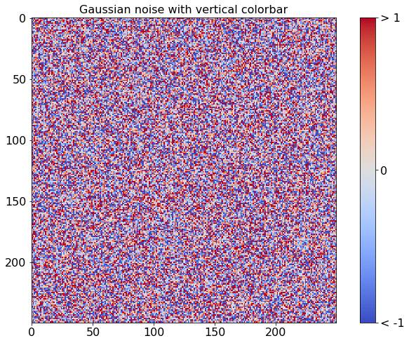

Jupyter Notebooks
The nbsphinx extension allow notebooks to be seemlessly integrated into a Sphinx website. This page demonstrates how notebooks are rendered.
Mathematics
MathJax can use used to render mathematical equations. Equations can be rendered either in their own line using double dollar signs
\[y_{it} = \alpha_i + \gamma_t + \beta x_{it} + \epsilon_{it}\]
or inline using single dollar signs (\(\LaTeX\)).
DataFrames
pandas DataFrames are rendered with useful markup.
[1]:
import numpy as np
import pandas as pd
df = pd.DataFrame({'ints': [1, 2, 3],
'floats': [np.pi, np.exp(1), (1+np.sqrt(5))/2],
'strings': ['aardvark', 'bananarama', 'charcuterie' ]})
df
[1]:
| ints | floats | strings | |
|---|---|---|---|
| 0 | 1 | 3.141593 | aardvark |
| 1 | 2 | 2.718282 | bananarama |
| 2 | 3 | 1.618034 | charcuterie |
Plots and Figures
matplotlib can be used to produce plots in notebooks
This example comes from the matplotlib gallery.
[2]:
%matplotlib inline
import numpy as np
import matplotlib.pyplot as plt
from matplotlib import cm
fig, ax = plt.subplots(figsize=(12,8))
data = np.clip(np.random.randn(250, 250), -1, 1)
cax = ax.imshow(data, interpolation='nearest', cmap=cm.coolwarm)
ax.set_title('Gaussian noise with vertical colorbar', fontsize=16)
plt.tick_params(labelsize=16)
# Add colorbar, make sure to specify tick locations to match desired ticklabels
cbar = fig.colorbar(cax, ticks=[-1, 0, 1])
cbar.ax.set_yticklabels(['< -1', '0', '> 1']) # vertically oriented colorbar
cbar.ax.tick_params(labelsize=16)

STDERR and STDOUT
[3]:
raise ValueError(", ".join(str(i) for i in range(100)))
---------------------------------------------------------------------------
ValueError Traceback (most recent call last)
Input In [3], in <cell line: 1>()
----> 1 raise ValueError(", ".join(str(i) for i in range(100)))
ValueError: 0, 1, 2, 3, 4, 5, 6, 7, 8, 9, 10, 11, 12, 13, 14, 15, 16, 17, 18, 19, 20, 21, 22, 23, 24, 25, 26, 27, 28, 29, 30, 31, 32, 33, 34, 35, 36, 37, 38, 39, 40, 41, 42, 43, 44, 45, 46, 47, 48, 49, 50, 51, 52, 53, 54, 55, 56, 57, 58, 59, 60, 61, 62, 63, 64, 65, 66, 67, 68, 69, 70, 71, 72, 73, 74, 75, 76, 77, 78, 79, 80, 81, 82, 83, 84, 85, 86, 87, 88, 89, 90, 91, 92, 93, 94, 95, 96, 97, 98, 99
[4]:
import sys
print("hi", file=sys.stderr)
hi
[5]:
print("hi, this is stderr", file=sys.stderr)
print("hi, this is stdout", file=sys.stdout)
"this is a return value"
hi, this is stdout
hi, this is stderr
[5]:
'this is a return value'
[6]:
print("hi, this is stderr", file=sys.stderr)
print("hi, this is stdout", file=sys.stdout)
raise ValueError("this is an error")
hi, this is stdout
hi, this is stderr
---------------------------------------------------------------------------
ValueError Traceback (most recent call last)
Input In [6], in <cell line: 3>()
1 print("hi, this is stderr", file=sys.stderr)
2 print("hi, this is stdout", file=sys.stdout)
----> 3 raise ValueError("this is an error")
ValueError: this is an error
[7]:
# This cell has no output